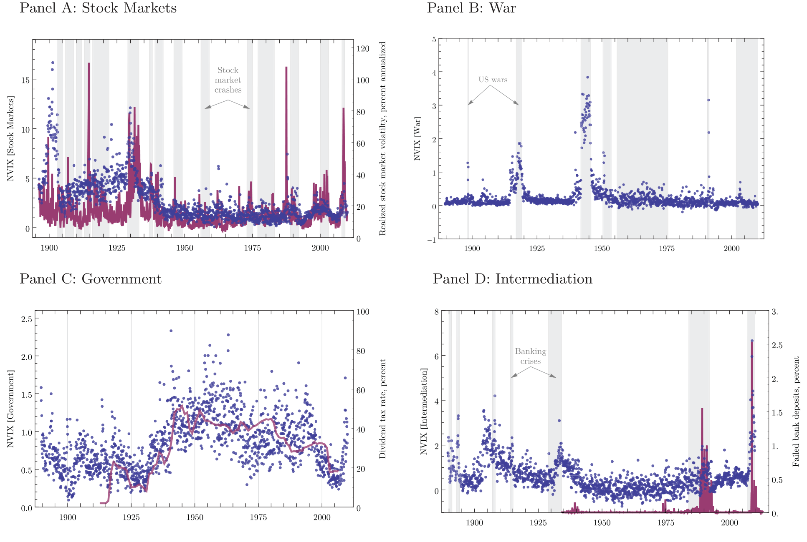
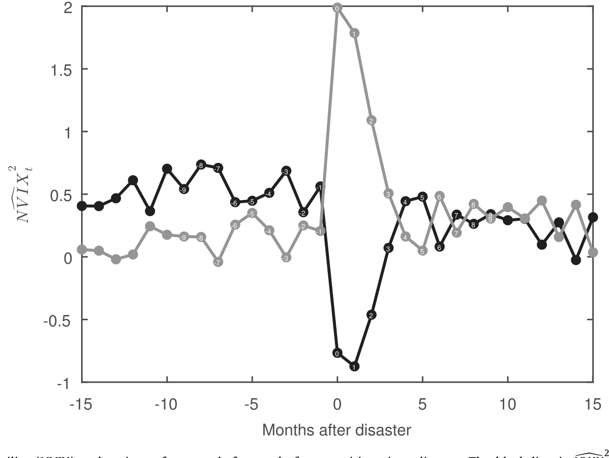
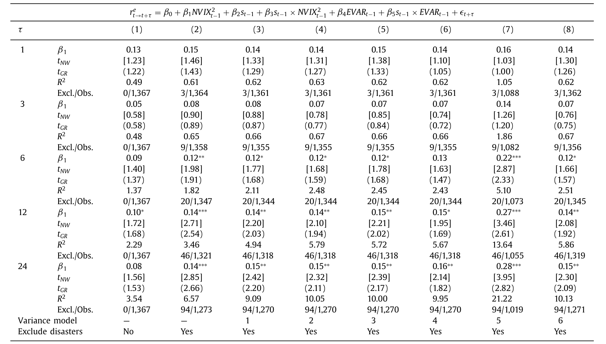
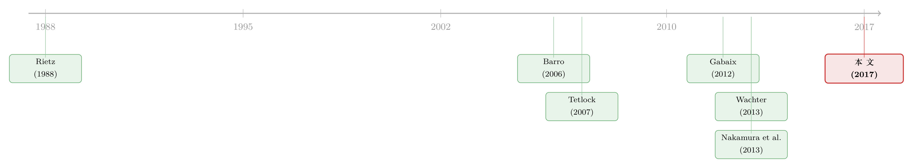

把「时代的恐惧」从一百二十年的报纸头版里读出来
本文读的是 Manela & Moreira (2017, Journal of Financial Economics)：他们用《华尔街日报》1890 年以来的头版文章，借助机器学习造出一个跨越百年的「新闻隐含波动率」(NVIX)；NVIX 高的时期之后股市收益更高，而且它在每一次经济灾难来临前都会率先抬头——这把尺子第一次让「罕见灾难风险」这个看不见的东西，变得可以测量、可以检验。
1 引言：一个看不见的驱动力
罕见灾难 (rare disasters) 理论是过去二十年资产定价里最迷人、也最让人挠头的一支。它的逻辑极其干净：投资者之所以要求那么高的股权溢价 (equity premium)，是因为他们心里始终悬着一件小概率、却足以让财富腰斩的大事——大萧条、世界大战、金融危机。只要这种「灾难概率」会随时间起伏，模型就能同时解释高溢价、高波动，以及收益的可预测性。
可问题恰恰出在这里。Gourio (2008) 有一句话点破了整支文献的软肋：「这个关键问题很难回答，因为校准之所以成功，全靠那个又大又持久的灾难概率变动——而它是不可观测的。」换句话说，理论把全部解释力押在一个谁也没见过的状态变量上。你说投资者在 1938 年很害怕，可事后看，灾难并没有真的发生，硬数据里什么都没留下。等尘埃落定，人们当年的恐惧就被忘得一干二净，只剩下冷冰冰的事后统计。
于是一个自然的问题是：有没有办法，把「当时的恐惧」本身给量出来？ 这正是本文的野心。两位作者的切入点听上去几乎有点天真——去读报纸。具体地说，去读《华尔街日报》的头版，因为商业媒体头版上反复出现的话题，本身就是普通投资者「此刻在担心什么」的一面镜子。这个想法并不随意，它和 Gentzkow & Shapiro (2006) 关于新闻企业的理论一致：媒体观察现实、再选择强调什么，以建立自己的声誉，因此它的措辞会忠实地折射读者的关切。
文本能测情绪，这件事 Tetlock (2007) 已经做过——他数财经专栏里正负面词的比例来预测道指日收益。但本文要解决的是一个更难的问题：不是测「语气好坏」，而是把新闻直接翻译成一个有经济量纲的东西——期权市场的隐含波动率。
2 NVIX 是怎么造出来的：让机器学会「读恐惧」
先把数据摆出来。样本是《华尔街日报》头版的标题与摘要，从 1889 年 7 月一直到 2009 年 12 月。把每个月的文本拆成一元和二元的 n 元词 (n-gram)，剔除全样本出现少于三次的，最后每个月用一个 K = 468,091 维的向量 x_t 表示，每一维是该 n 元词当月的（归一化）词频：
$$x_{t,i} = \frac{\#\{\text{n-gram } i \text{ in month } t\}}{\#\{\text{n-grams in month } t\}}$$
归一化很重要——一个世纪里每篇文章的字数、每天的文章数都在变，不归一化就会把「报纸变厚了」误读成「恐惧变多了」。
接着，一个自然的想法是用这些词频去线性地预测期权隐含波动率 (implied volatility) v_t：
$$v_t = w_0 + w\cdot x_t + \upsilon_t,\quad t = 1,\dots,T$$
但真正的难点在于：训练样本只有 T_train = 168 个月，而特征维度 K 有四十多万。用普通最小二乘 (OLS) 去估 w？方程数远小于未知数，必然过拟合到失控。
于是关键的一步出现了：他们改用 支持向量回归 (support vector regression, SVR)。SVR 最小化的目标函数是
$$H(w, w_0) = \sum_{t\in train} g_\epsilon\big(v_t - w_0 - w\cdot x_t\big) + c\,(w\cdot w)$$
其中 g_ε 是一个「ε-不敏感」的损失：
$$g_\epsilon(e) = \max\{0,\; |e| - \epsilon\}$$
它对小于 ε 的误差视而不见，只惩罚真正离谱的偏差；后一项 c(w·w) 是正则化，按住系数不让它乱跑。它的解可以写成训练样本的加权平均：
$$\hat{w}_{SVR} = \sum_{t\in train} (\hat\alpha^*_t - \hat\alpha_t)\, x_t$$
而绝大多数权重 α̂ 都是零——SVR 只挑出少数几个「支持向量」，把一个无解的超定问题，压缩成一个只需估 T_train 个对偶权重的可解问题。代价是它不能像人那样去甄别哪个词更重要（比如它会给「peace」和某个恰好出现在低波动月份的「Tolstoy」差不多的权重），所以成败最终只能由样本外拟合来裁决。
裁决结果相当漂亮。样本内 R²(train) = 91%；更要紧的是样本外（test 子样本 1986–1995）：均方根误差 RMSE = 7.48 个百分点，R² = 19%。把真实 VIX 对 NVIX 做回归，系数 b = 0.82（标准误 0.20），既统计上大于零（t = 4.01），又与 1 没有显著差别（t = −0.88）。这正是把 NVIX 当作 VIX 向历史延伸的底气所在。
把这个模型一路外推回 1890 年，得到的 NVIX 序列在 1929 年股灾、两次世界大战、LTCM 危机、2008 年金融危机这些时点上齐刷刷地飙升。一把横跨一百二十年的「恐惧温度计」就此成型。
这里其实藏着两条研究主线的交汇：一条是把新闻文本变成可定价信号（参见《报纸是怎么「数」出股市恐慌的：把波动拆成四十个抽屉》），另一条是用机器学习换取可解释性（参见《让机器去看 K 线图：一台神经网络，把「技术分析」从学术的垃圾桶里捡了回来》）。本文最聪明的地方，是没有为了上机器学习而牺牲可解释性。
3 战后检验：恐惧之后，是更高的收益
有了尺子，先做最经典的检验：NVIX 高的时候，未来收益会更高吗？理论说会——隐含波动率的波动既反映对未来波动的预期 (Merton, 1973)，也反映方差风险溢价 (Bollerslev, Tauchen & Zhou, 2009)，更反映灾难概率 (Gabaix, 2012; Wachter, 2013)。
在战后样本（1945 年 1 月–2009 年 12 月）里，结果很强：NVIX 每上升一个标准差，未来一年的年化超额收益高出 3.3 个百分点，未来两年年化高出 2.9 个百分点。
但真正关键的一步，不是「显著」，而是正交性。一个怀疑者会立刻反问：这会不会只是把已实现波动率 (realized volatility) 换了个马甲？作者的回答是，NVIX 的预测力与同期、以及前瞻性的市场波动率度量都是正交的——控制了 VIX、方差溢价、Bollerslev & Todorov (2011) 的左尾风险度量、隐含波动率斜率之后，NVIX 依然显著。也就是说，它捕捉到的，是一种超出波动率本身的东西。
那这个「东西」是什么？作者给出三条线索，都指向罕见灾难：其一，预测力独立于波动率；其二，用更偏左尾的期权度量去造它们的新闻版本，结论一致；其三——也是下面要展开的——这种恐惧，可以被进一步拆解，看清它到底来自哪里。
4 哪些担忧真正被定价？战争与政府
可解释性在这里第一次发挥威力。作者把文本分成五个或多或少与灾难相关的类别：战争 (War)、金融中介 (Financial Intermediation)、政府 (Government)、股票市场 (Stock Markets)、自然灾害 (Natural Disasters)，再看哪一类驱动了 NVIX 对收益的预测力。
结论既清晰又出人意料：在 NVIX 识别出的风险溢价时间变动里，战争解释了约 53%，政府解释了约 27%。

Figure 3: News implied volatility (NVIX) due to different word categories. In all panels dots are monthly NVIX due only to category C -related words v
而真正的反转在于「驱动变动」和「被定价」是两回事。股票市场这一类——它与已实现波动率高度相关，贡献了 NVIX 总变动里相当大的一块——却几乎没有被定价。反过来，战争与政府相关的担忧虽然不是 NVIX 总变动的主力，却驱动了它绝大部分被定价的变动。换句话说，市场为之索要补偿的，恰恰是那些和「灾难」直接挂钩的恐惧，而不是日常的市场波动。这强有力地支持了「时变灾难风险在战后美股中被定价」这一判断。
顺带一提，政府类担忧被作者识别为再分配风险：NVIX 的政府成分惊人地贴合美国税收政策的变迁。恐惧不只关于「会不会崩」，也关于「财富会不会被重新切分」。
5 真正的硬仗：让 NVIX 去预测灾难本身
到此为止，故事还停在「预测收益」。可一个真正测量灾难担忧的变量，按理说不该只预测收益——它还应该预测灾难本身。这才是把理论逼到墙角的检验，也是本文把样本拉回 1896–1944 那段最动荡岁月的原因。
难点是：灾难是隐变量，你怎么知道某个月到底「是不是」灾难期？作者搭了一个基于 Nakamura, Steinsson, Barro & Ursúa (2013) 的贝叶斯 (Bayesian) 框架来估计灾难发生的确切时点。设经济处于隐藏状态 s_t，价格-股利比可以写成灾难状态的函数 π(s_t) = π̄ e^{ψ(s_t)}（归一化 ψ(0) = 0）；把它代入股利索取权的对数收益，并围绕平均价格-股利比做对数线性化，得到已实现对数超额收益的动态：
同时，已实现方差被分解为灾难成分加上度量噪声：
$$rvar_t = \sigma^2_{d,t} + \sigma_{rvar}\, w^{rvar}_t$$
把隐藏状态 x_t 写成一个自回归过程，
$$x_{t+1} = A x_t + C\,\epsilon_{t+1}$$
再用观测方程把对数超额收益、已实现方差、消费增长等可观测量连到隐藏状态上。给定校准的参数和数据 Y，目标是反推最可能的灾难轨迹，靠的是贝叶斯后验
$$p(S, X \mid Y) \propto p(Y \mid X, S)\, p(X \mid S)\, p(S)$$
其中先验 p(S) 取自 Barro & Ursua (2008) 估的每年 2% 灾难概率；后验则用 Gibbs 抽样配合卡尔曼平滑器迭代构造。
结果一目了然：估计出的后验灾难概率，在两次世界大战之间的三段清晰、独立的时期里冲到了 1，并且在若干「擦肩而过」的时刻（如 2008 年金融危机）骤然抬升却未触顶。而最关键的一句话是：NVIX 能预测这个后验概率的创新项——NVIX 每上升一个标准差，预示未来一年灾难概率高出 2.5 个百分点。恐惧确实跑在灾难前面。

Figure 5: News Implied Volatility (NVIX) and variance forecasts before and after transitions into disaster. The black line is N V IX , the component o
这里还埋着一个识别上的陷阱，作者处理得很漂亮，值得单说。如果你把灾难期从回归里剔除，可能会人为制造出可预测性：一个只预测方差、不预测收益的变量，会因为灾难总伴随异常低的收益而被「截断」机制误判成能预测收益。为把这个可能性堵死，作者写下一个反事实模型——只有时变波动、收益恒定、没有任何真实灾难补偿：
$$\sigma^2_{t+1} = \mu_\sigma + \rho_\sigma \sigma^2_t + \omega\, \sigma^2_t H\, \sigma w_{t+1}$$ $$r_{t+1} = \mu_r + \sigma_{t+1} H_r\, w_{t+1}$$
在这个世界里，任何「可预测性」都必须经由对米尔斯比率 (Mills ratio) 的预测、再乘以波动率来实现。于是他们先估出米尔斯比率，再放进收益回归
$$r_{t+1} = \beta_0 + \beta_1\, NVIX^2_t + \beta_2\, \hat\Pi X_t$$
如果 NVIX 的预测力只是截断的假象，控制了米尔斯比率后 β_1 就该归零。事实是没有。一旦为「事后真实发生的灾难」调整估计，NVIX 与未来收益的关系，竟与战后估计惊人地相似。

Table 11: reports the normal times predictability coef-
更妙的是这套框架顺手给灾难风险文献交了一份答卷。作者估出：年灾难概率每上升 1 个百分点，风险溢价上升 1.16 个百分点——这个灵敏度与 Wachter (2013) 用 Barro & Ursua (2008) 跨国灾难分布校准出来的数字几乎一致，说明 NVIX 捕捉的灾难，与文献里研究的是同一量级的灾难。但在持续性上，本文的估计显著低于 Wachter (2013) 和 Gourio (2008, 2012) 的校准——投资者的灾难担忧，来去比模型假设的要快。
6 文献脉络
把镜头拉远，这篇论文恰好站在两条河流的汇口。
第一条是罕见灾难定价。源头是 Rietz (1988)——他第一个提出，那些「恰好没在美国数据里发生」的大事，足以解释股权溢价之谜。Brown, Goetzmann & Ross (1995) 反过来提醒：能用如此长的美国样本估出溢价，本身就说明这段历史「太走运」（即生存者偏差/peso 问题）。Barro (2006)、Barro & Ursua (2008) 用 20 世纪世界史校准，让点估计「说得通」；Gabaix (2012)、Wachter (2013)、Gourio (2008, 2012) 再进一步，证明时变灾难风险能解释数据里的时间变动。但这一支始终被 Gourio 的诘问压着——那个灾难概率不可观测。

第二条是文本驱动的资产定价。Tetlock (2007) 数词的正负面，García (2013) 发现这种可预测性集中在衰退、且很快反转（更像情绪而非风险补偿）；Loughran & McDonald (2011) 做金融词表；Baker, Bloom & Davis (2013) 做经济政策不确定性指数。本文与它们的分野在于：它不靠人工词表分类语气，而是用 SVR 把所有头版词汇「漏斗」成一个可解释的 VIX，从而在月度频率上找到与风险补偿一致、不易反转的可预测性。
本文 Manela & Moreira (2017) 正是把这两条河汇到一起：用第二条河的工具（文本 + 机器学习），去回答第一条河绕不开的难题（灾难概率不可观测）。它给罕见灾难文献送来一个跨越百年、且可拆解成「战争/政府/股市」的可观测代理。关于「灾难在投资者回过神之前就走完了一半」这条更偏行为的暗线，可参见《投资者还没回过神，灾难已经走完了一半》；而如何在不看资产价格的前提下量出一国宏观尾部风险，则可对照《把「灾难」从价格里赶出去：怎样在不看资产价格的前提下，量出一国的宏观尾部风险》。
7 评论与延伸（Q&A + 研究方向）
(a) 几个可能的疑问
Q：NVIX 和直接用 VIX 有什么本质区别？既然它是用来预测 VIX 的，会不会只是个更差的 VIX？
关键区别有二。一是时间长度：VXO 只到 1986 年，NVIX 能回到 1890 年，多出来的一个世纪里装着大萧条和两次世界大战——这正是检验灾难理论最需要的样本。二是可解释性：NVIX 能被拆成战争、政府等类别，从而回答「哪种恐惧被定价」，这是 VIX 这个单一数字给不了的。而且预测收益时 NVIX 的作用与 VIX 正交，说明它不是 VIX 的劣质复制。
Q：用 1996–2009 训练、却去预测 1890 年代的文本，词的含义早就变了，这套外推凭什么成立？
作者正是用样本外拟合来回应。把方法换成预测已实现波动率（而非 VIX），它在几十年前依然奏效，说明报纸的用词选择在这段历史里相当稳定。当然他们也承认存在词义漂移（如 1930 年代的「Dust Bowl」对今天投资者无意义），但这类度量误差只会让预测系数偏向零，属于保守偏误，不会制造出假的可预测性。
Q：战争解释 53%、政府解释 27%——会不会只是因为这些词在两次大战期间天然高频，纯粹是机械相关？
不止是高频。分类的意义在于，作者看的是这些类别驱动了多少被定价的变动，而不是多少总变动。股市类词频也很高、与已实现波动率高度相关，却几乎没被定价；恰恰是战争与政府这些和灾难直接挂钩的类别，承担了风险补偿。这种「驱动变动」与「被定价」的分离，正是机械相关解释不了的。
Q：这篇和 Baker-Bloom-Davis 的经济政策不确定性指数到底差在哪？
后者用人工设定的关键词去数报纸、构造一个不确定性「水平」指标，本身不直接对应任何可定价的量。本文用机器学习把文本映射到期权隐含波动率这个有经济量纲、可与风险溢价对话的对象上。作者明确指出，NVIX 在「把文本与总量风险溢价的变动联系起来」这件事上是独特的。
Q：贝叶斯框架里那个 2% 的年灾难概率先验，是不是把结论提前塞进去了？
这个先验取自 Barro & Ursua (2008) 的跨国数据，是外生校准而非拟合出来的。更重要的是，结论的力量不在「灾难概率多大」，而在「NVIX 能否预测它的创新项」——后者是数据说话，不受先验水平左右。而且米尔斯比率那套截断检验，正是为了排除「NVIX 其实只预测波动、被截断机制伪装成预测收益」这一替代解释。
Q：作者估出的灾难持续性比 Wachter (2013) 低，这是好消息还是坏消息？
算是一个温和的修正。灵敏度（1 pp 概率 → 1.16 pp 溢价）与 Wachter 几乎吻合，说明灾难的「量级」校准是对的；但持续性更低，意味着投资者的灾难担忧比模型假设的更善变、更快回落。这对依赖「又大又持久」的概率变动来制造可预测性的校准，是一个需要正视的张力。
(b) 几个可能的研究问题与提案
1. 把 NVIX 的方法搬到公司债/信用市场
【经济故事】NVIX 用头版文本预测股票期权波动率。信用利差里的灾难/流动性成分同样难测，而违约本质上就是一种企业层面的「灾难」。能否用同样的文本→SVR 思路，造一个预测信用市场波动（如 CDX 期权隐含波动率或利差波动）的「News Implied Credit Stress」，并检验它能否预测违约潮与信用利差？ 【可行性】中。文本端可用 WSJ/路透头版或公司新闻；目标变量可取 CDX 期权波动或高收益利差。难点在于信用衍生品的高质量历史只到 2000 年代，长样本优势会打折，识别更依赖样本外拟合而非历史延伸。
2. 外资持有人的「本国恐惧」会不会被定价进东道国资产
【经济故事】本文显示战争、政府（再分配）类担忧被定价。对跨境投资者而言，母国的政策/地缘恐惧可能通过其组合调整溢出到东道国的债与股。能否对多国财经媒体分别构造 NVIX，检验「外资母国的灾难担忧」是否预测东道国资产的风险溢价与资本外流？ 【可行性】中。多语种文本 + 跨国持仓数据（如 TIC、各国托管数据）可得，但跨语言的文本一致性与词义漂移是真实障碍，需要谨慎的对齐与样本外验证。
3. 灾难担忧的「期限结构」
【经济故事】NVIX 是一个标量，但灾难恐惧可能有期限——市场怕的是「明年开战」还是「十年内财政崩溃」？用不同到期的期权波动率作为多个目标，构造一组期限不同的 NVIX，看哪一段期限的恐惧驱动了哪一段的收益可预测性。 【可行性】中偏低。多到期期权数据只在近二十年完整，长样本里无法直接观测期限结构，只能在短样本里估、再设法外推，识别难度明显高于本文。
4. 把可解释性推到极致：哪些「事件词」事前就值钱
【经济故事】本文用五大类别。但 SVR 给每个 n 元词都赋了权重，理论上能做更细的事后归因——是「nationalize」「default」「embargo」这类词，还是「peace」「accord」这类词在驱动溢价？做一个词级别的定价归因图谱，可能直接读出投资者最怕的具体情节。 【可行性】高。数据与方法本文都已具备，主要是把已有的权重向量与收益预测做交互归因，工程量可控，且天然延续本文「可解释性」的卖点。
8 我的判断
这是一篇方法与问题咬合得非常好的论文。它最大的贡献不是「又找到一个能预测收益的变量」，而是给罕见灾难文献补上了那个一直缺席的、可观测的状态变量，并且让它可拆解——能告诉你被定价的恐惧来自战争与政府，而非日常市场波动。这把可解释性，是相对于「人工词表」和「黑箱机器学习」两端的真正进步。米尔斯比率那套截断检验，也把「只预测波动率被伪装成预测收益」这个最致命的替代解释认真堵住了，态度可敬。
要我说担忧，主要落在两处。其一是词义稳定性这个根本假设：把 2000 年代训练的模型外推回 1890 年代，作者用样本外拟合做了辩护，但一个世纪的语言、媒体生态、读者结构变化巨大，已实现波动率版本「能用」并不等于「无偏」，这层不确定性很难完全消除。其二是贝叶斯灾难估计对校准的依赖：2% 先验、灾难持续性、消费增长校准都来自外部，结论的稳健性在多大程度上受这些选择牵动，值得更系统的敏感性分析。
后续我最想看到的，是把这条思路从「指数层面」推到「横截面层面」——不同行业、不同久期、乃至公司债的灾难暴露，能否用同样的文本信号区分开来；以及在 2009 年之后（社交媒体崛起、新闻供给结构剧变）的样本里，这把百年温度计是否还读得准。无论如何，它示范了一件事：有时候，测量一个「看不见的东西」，答案就静静躺在被人遗忘的旧报纸头版里。
参考文献
- Barro, R. J. (2006). Rare disasters and asset markets in the twentieth century. Quarterly Journal of Economics 121(3), 823–866.
- Barro, R. J., & Ursúa, J. F. (2008). Macroeconomic crises since 1870. Brookings Papers on Economic Activity 2008(1), 255–350.
- Bollerslev, T., Tauchen, G., & Zhou, H. (2009). Expected stock returns and variance risk premia. Review of Financial Studies 22(11), 4463–4492.
- Bollerslev, T., & Todorov, V. (2011). Tails, fears, and risk premia. Journal of Finance 66(6), 2165–2211.
- Brown, S. J., Goetzmann, W. N., & Ross, S. A. (1995). Survival. Journal of Finance 50(3), 853–873.
- Gabaix, X. (2012). Variable rare disasters: An exactly solved framework for ten puzzles in macro-finance. Quarterly Journal of Economics 127(2), 645–700.
- Gentzkow, M., & Shapiro, J. M. (2006). Media bias and reputation. Journal of Political Economy 114(2), 280–316.
- Gourio, F. (2012). Disaster risk and business cycles. American Economic Review 102(6), 2734–2766.
- Loughran, T., & McDonald, B. (2011). When is a liability not a liability? Textual analysis, dictionaries, and 10-Ks. Journal of Finance 66(1), 35–65.
- Manela, A., & Moreira, A. (2017). News implied volatility and disaster concerns. Journal of Financial Economics 123(1), 137–162.
- Merton, R. C. (1973). An intertemporal capital asset pricing model. Econometrica 41(5), 867–887.
- Nakamura, E., Steinsson, J., Barro, R., & Ursúa, J. (2013). Crises and recoveries in an empirical model of consumption disasters. American Economic Journal: Macroeconomics 5(3), 35–74.
- Rietz, T. A. (1988). The equity risk premium: A solution. Journal of Monetary Economics 22(1), 117–131.
- Tetlock, P. C. (2007). Giving content to investor sentiment: The role of media in the stock market. Journal of Finance 62(3), 1139–1168.
- Wachter, J. A. (2013). Can time-varying risk of rare disasters explain aggregate stock market volatility? Journal of Finance 68(3), 987–1035.